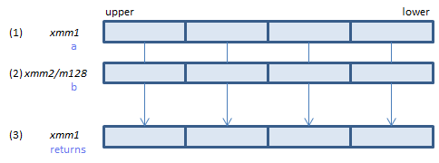
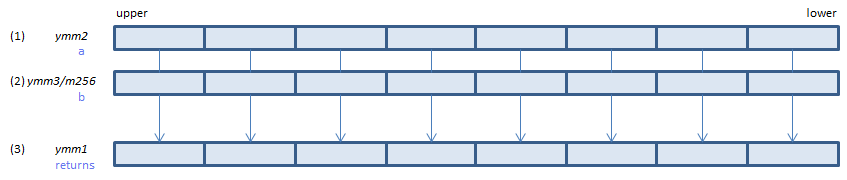
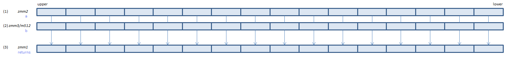

ADDPS - ADD Packed Single
ADDPS xmm1, xmm2/m128 (S1
__m128 _mm_add_ps(__m128 a, __m128 b)

For each float, calculate (1) + (2) and set the result to (3).
VADDPS xmm1, xmm2, xmm3/m128 (V1
__m128 _mm_add_ps(__m128 a, __m128 b)
VADDPS xmm1{k1}{z}, xmm2, xmm3/m128/m32bcst (V5+VL
__m128 _mm_mask_add_ps(__m128 s, __mmask8 k, __m128 a, __m128 b)
__m128 _mm_maskz_add_ps(__mmask8 k, __m128 a, __m128 b)

For each float, calculate (1) + (2) and set the result to (3).
VADDPS ymm1, ymm2, ymm3/m256 (V1
__m256 _mm256_add_ps(__m256 a, __m256 b)
VADDPS ymm1{k1}{z}, ymm2, ymm3/m256/m32bcst (V5+VL
__m256 _mm256_mask_add_ps(__m256 s, __mmask8 k, __m256 a, __m256 b)
__m256 _mm256_maskz_add_ps(__mmask8 k, __m256 a, __m256 b)

For each float, calculate (1) + (2) and set the result to (3).
VADDPS zmm1{k1}{z}, zmm2, zmm3/m512/m32bcst{er} (V5
__m512 _mm512_add_ps(__m512 a, __m512 b)
__m512 _mm512_mask_add_ps(__m512 s, __mmask16 k, __m512 a, __m512 b)
__m512 _mm512_maskz_add_ps(__mmask16 k, __m512 a, __m512 b)
__m512 _mm512_add_round_ps(__m512 a, __m512 b, int r)
__m512 _mm512_mask_add_round_ps(__m512 s, __mmask16 k, __m512 a, __m512 b, int r)
__m512 _mm512_maskz_add_round_ps(__mmask16 k, __m512 a, __m512 b, int r)

For each float, calculate (1) + (2) and set the result to (3).
x86/x64 SIMD Instruction List
Feedback